Friday 23 October 2026. Every picture is the real app drawn from its code in sample mode at 390 wide, with made-up people, on a fixed Friday morning so versions compare fairly. Nothing here is Luke's account.
Now, on main
Today, the two maps, Command, Leads and Relationships as they are on main this afternoon. Under each: what it does well or badly, and what is on its first screen, counted by the browser rather than by eye. Swipe the row on a phone.
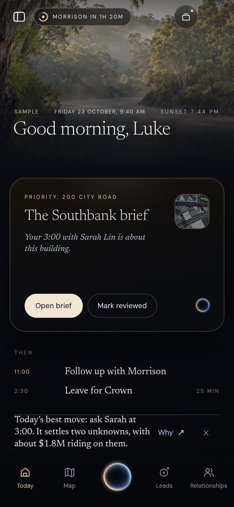
Today
The house look: photo, greeting, one card. But three things compete to be next.
8 type sizes · 14 text colours · 7 spaced-capital labels
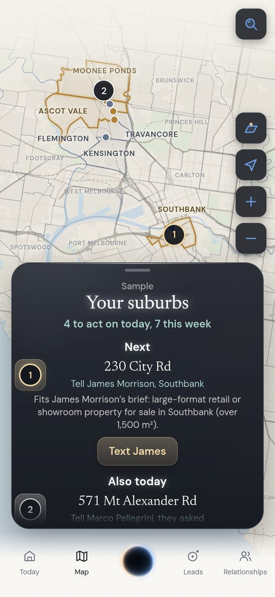
Map, simple
The closest to the structure: one numbered next step, one button. Its type is as busy as Leads.
11 type sizes · 15 text colours · 15 spaced-capital labels
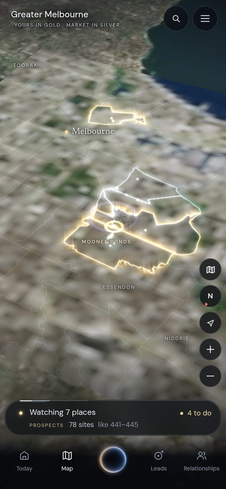
Map, aerial
Beautiful, but a view, not a page: no main thing, no next step.
6 type sizes · 9 text colours · 5 spaced-capital labels
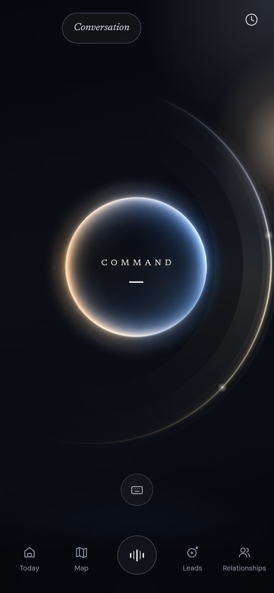
Command
The calmest page, and it says nothing about what to press.
5 type sizes · 5 text colours · 2 spaced-capital labels
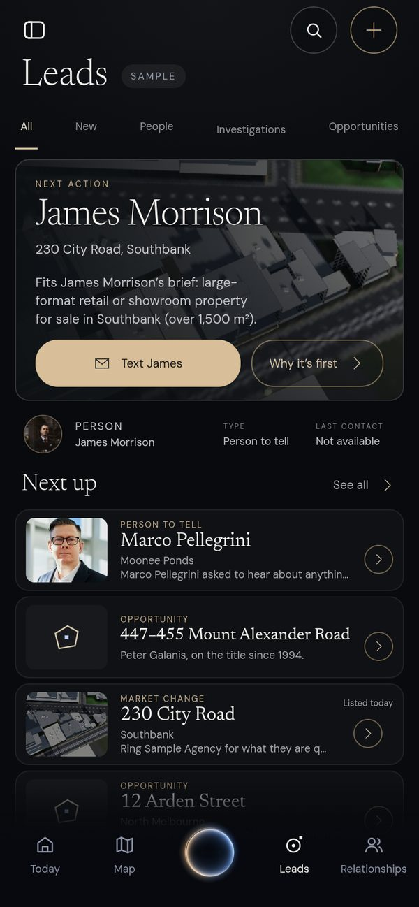
Leads
Right bones (James Morrison, Text James), the most dressing of all six.
11 type sizes · 16 text colours · 9 spaced-capital labels
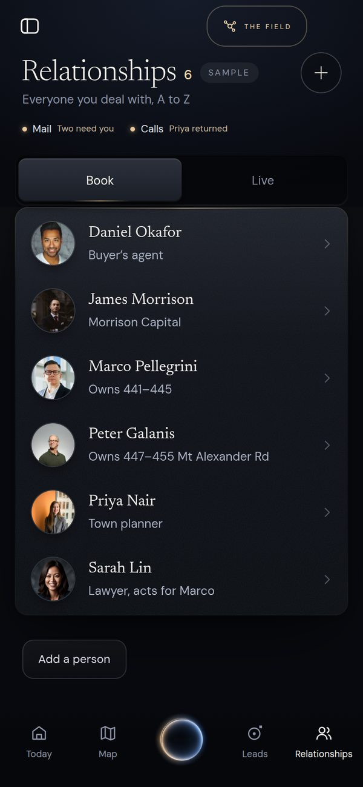
Relationships
A tidy contact list. No main person, no next step.
8 type sizes · 7 text colours · 2 spaced-capital labels
The maps load real tiles this time: street maps from OpenFreeMap and satellite imagery from Sentinel-2. Earlier reviews showed "Map unavailable" because their copy had no tiles.
The structure you liked
I've taken this to be this morning's control hub rework: you didn't like its look, but its skeleton was right. Every screen says four things, in this order. If you meant something else, tell me and I'll redo this part.
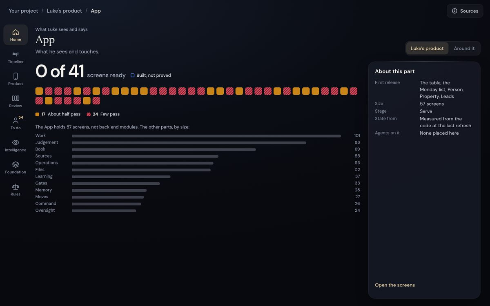
1. Where you areThe trail at the top: Your project, Luke's product, App.
2. The main thingOne thing, big: 0 of 41 screens ready.
3. The next stepOne action that says what it does: Open the screens.
4. The rest, on a tapDetail sits to the side or one tap away, never stacked on top.
Each page, checked against those four
Today
Keep the card. Cut to one next step.
Where you are
Yes "Good morning, Luke", Friday 23 October, 9:40 am
The main thing
Yes The Southbank brief
The next step
Partly Open brief. But "Morrison in 1h 20m" at the top and "ask Sarah at 3:00" at the bottom also ask to be next
The rest, on a tap
Yes Then: 11:00 Follow up with Morrison, 2:30 Leave for Crown
Map, simple
The model to copy for the other pages.
Where you are
Yes Your suburbs, ringed in gold
The main thing
Yes 230 City Rd, numbered 1 on the map and in the card
The next step
Yes Text James, the only button
The rest, on a tap
Yes Also today, under it in the same card
Map, aerial
Give it the simple map's card, or make it a way of seeing the simple map.
Where you are
Yes Greater Melbourne, yours in gold
The main thing
Missing Glowing suburbs; nothing says which one matters
The next step
Missing None. "Owner may sell" sits small in the bottom bar
The rest, on a tap
Partly Seven round controls before any content
Command
Add one line saying what it's on and what to ask.
Where you are
Missing No page name; COMMAND in spaced capitals inside the orb
The main thing
Partly The orb, but not what it is doing
The next step
Missing Nothing says what to press; the keyboard button is the only visible way in
The rest, on a tap
Partly The clock opens history
Leads
Keep the order. Strip the dressing.
Where you are
Yes Leads, with five filters under it
The main thing
Yes James Morrison, on a photo of 230 City Road
The next step
Yes Text James
The rest, on a tap
Partly Next up, but each row repeats a capital label and its own round button
Relationships
Lead with one person who is due, and why. The 18 Oct drawing already does.
Where you are
Yes Relationships, everyone you deal with, A to Z
The main thing
Missing Six equal rows; nobody comes first
The next step
Missing Only "Add a person"
The rest, on a tap
Partly Book and Live; "Two need you" sits at 9.5 px
How each got here
Each row: the page now, then the three most recent versions that look really different. Small changes in between are skipped; the computer compared every version on main pixel by pixel to find where the look actually changed. Three rows include the 18 October drawing (Round 13), which was never built.
Today
Now
On main today
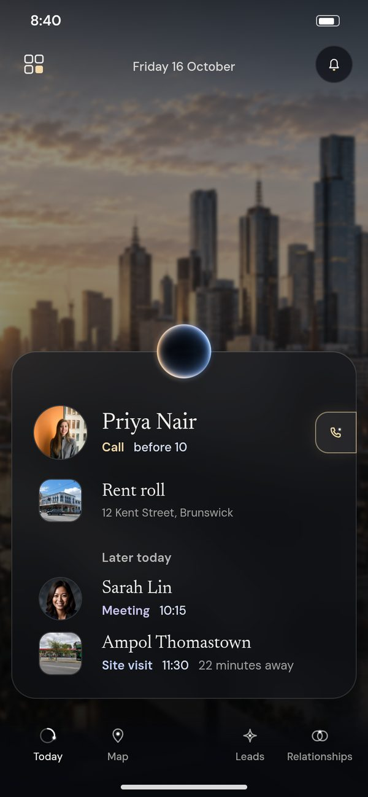
Drawn 18 Oct, never built
Round 13. One person, one call button, on glass over the city.
6 type sizes · 10 text colours · 0 spaced-capital labels
On main 14 to 19 Oct
At this hour it showed the day as a timeline: five things prepared overnight.
8 type sizes · 14 text colours · 7 spaced-capital labels
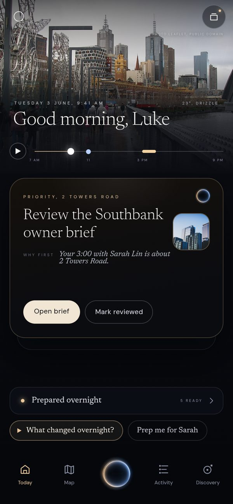
On main 26 Sep
The first: city at dusk, a play bar for the briefing, more buttons.
16 type sizes · 15 text colours · 9 spaced-capital labels
Map, simple
Now
On main today
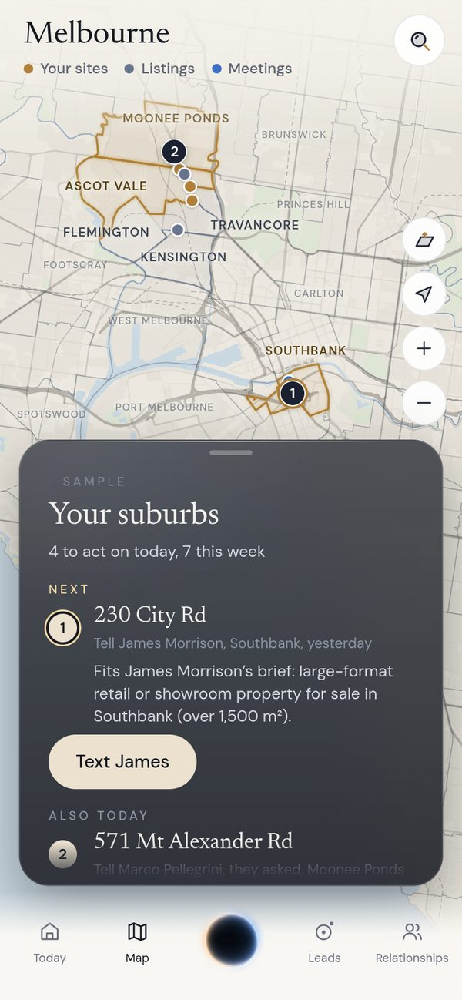
On main 18 Oct
The same card set to the left, a cream button, a title and key on the map.
11 type sizes · 15 text colours · 18 spaced-capital labels
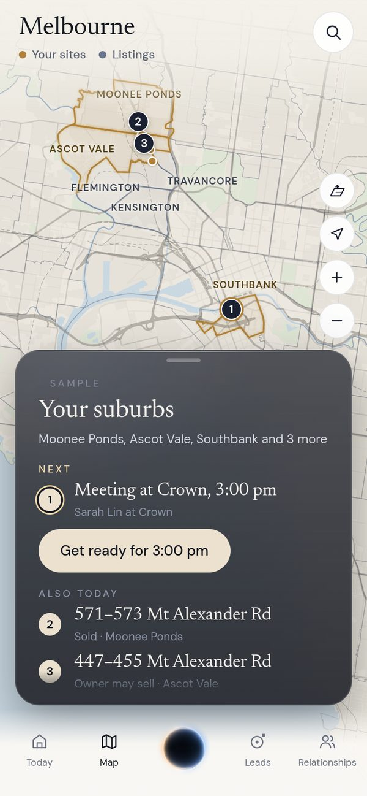
Drawn 17 Oct, afternoon
The glass card arrives. Next is a meeting at Crown.
11 type sizes · 14 text colours · 11 spaced-capital labels
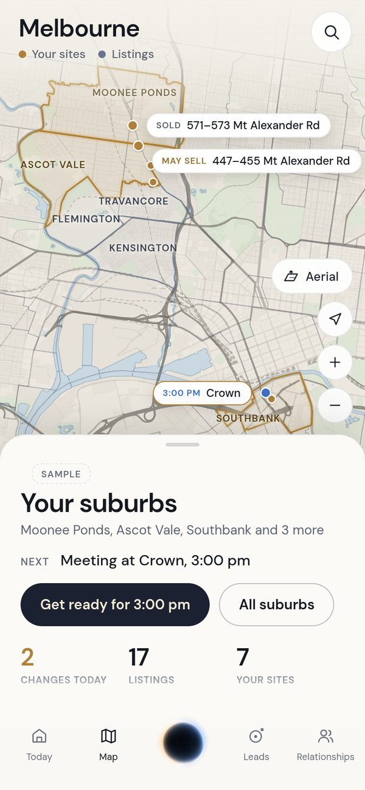
Drawn 17 Oct, morning
A paper card: "Your ground" and three big numbers.
16 type sizes · 15 text colours · 14 spaced-capital labels
Map, aerial
Now
On main today
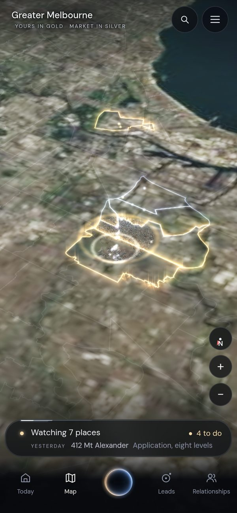
On main 11 Oct
Sharper imagery, a ring on Moonee Ponds, the same bar.
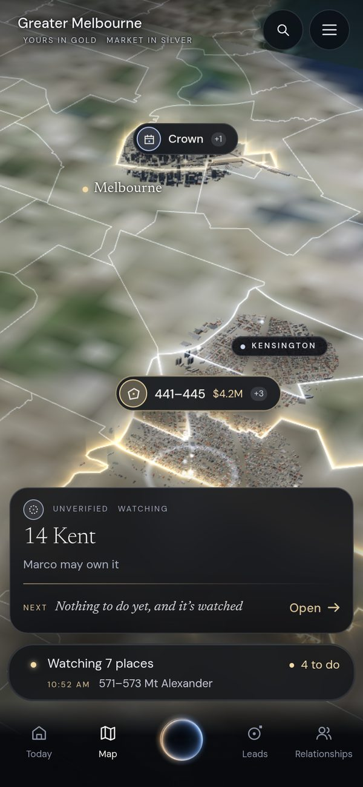
On main 9 Oct
A card over the map for one site: 14 Kent, "Marco may own it".
Command
Now
On main today
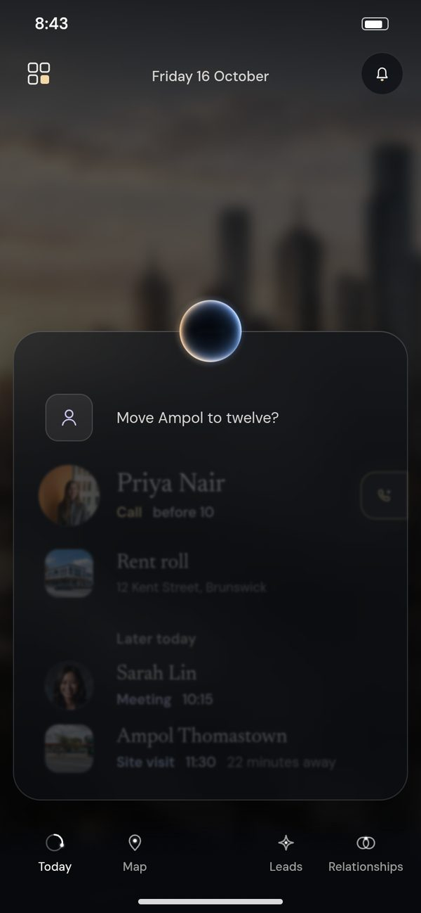
Drawn 18 Oct, never built
The orb sits on Today and asks one question: "Move Ampol to twelve?"
8 type sizes · 10 text colours · 0 spaced-capital labels
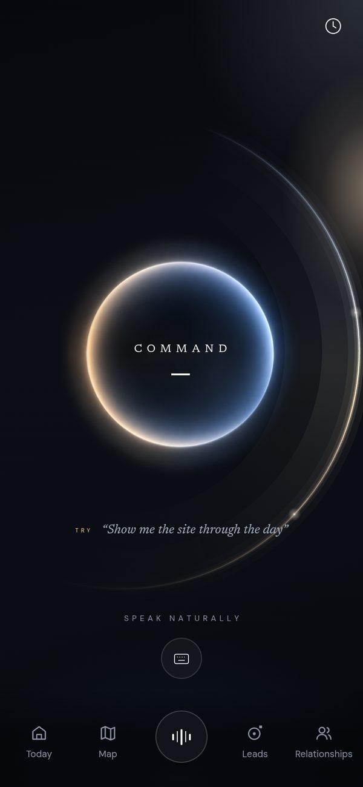
On main 9 to 12 Oct
A suggestion under the orb: try "Show me the site through the day".
6 type sizes · 3 text colours · 0 spaced-capital labels
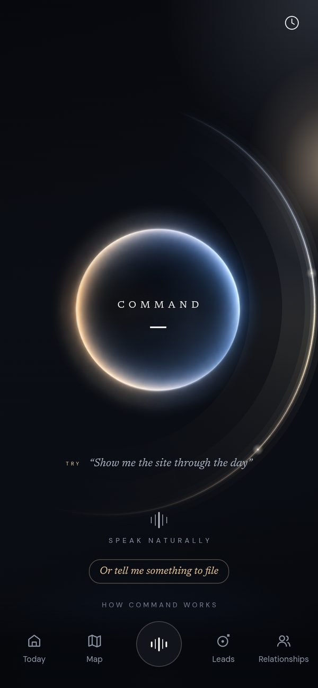
On main 6 to 9 Oct
Adds "Or tell me something to file" and "How Command works".
8 type sizes · 5 text colours · 2 spaced-capital labels
Leads
Now
On main today
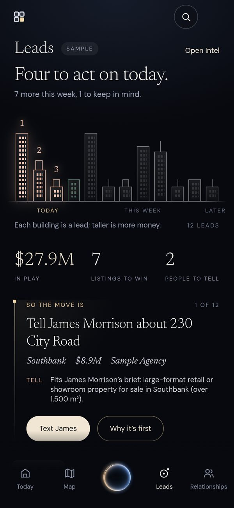
On main 7 to 12 Oct
"Four to act on today." A skyline where each building is a lead, then the move.
14 type sizes · 11 text colours · 11 spaced-capital labels
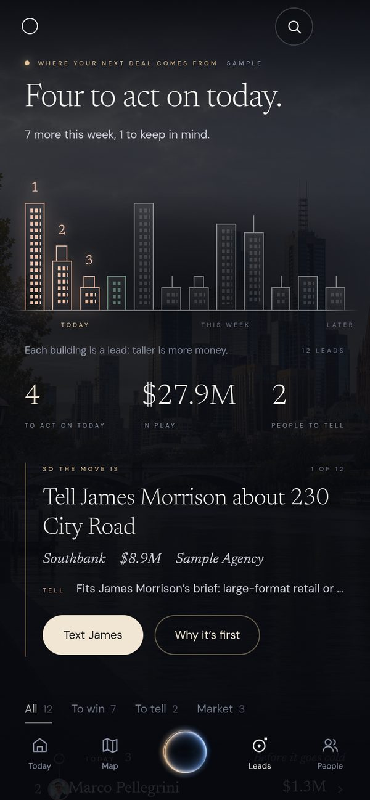
On main 30 Sep to 1 Oct
The same skyline over a city photo.
14 type sizes · 10 text colours · 12 spaced-capital labels
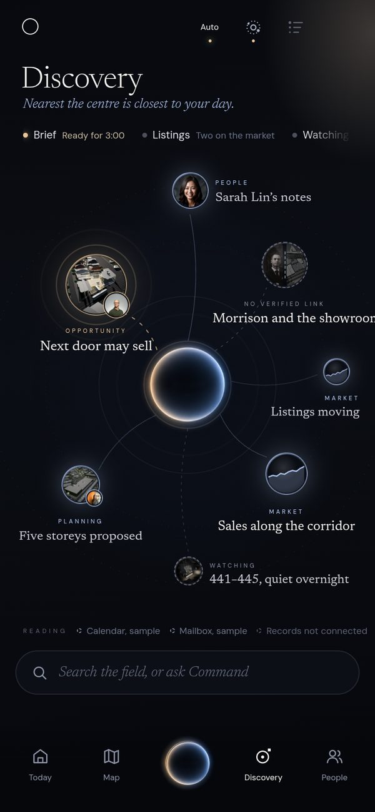
On main 26 to 30 Sep
Called Discovery: leads as planets around the orb.
13 type sizes · 10 text colours · 9 spaced-capital labels
Relationships
Now
On main today
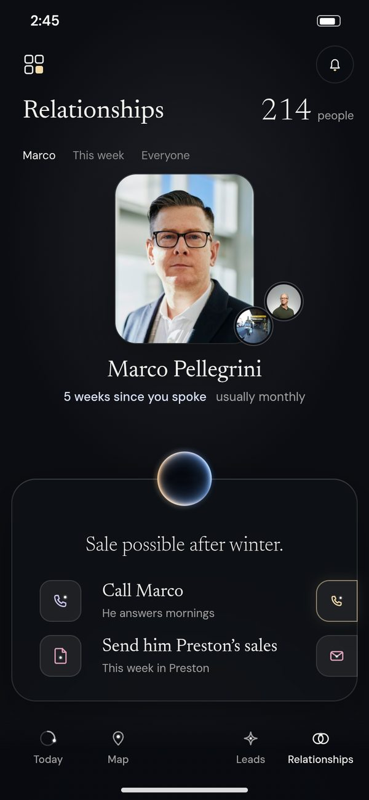
Drawn 18 Oct, never built
The one you called "the best of the thing so far, by far": one person, why now, two actions.
9 type sizes · 5 text colours · 0 spaced-capital labels
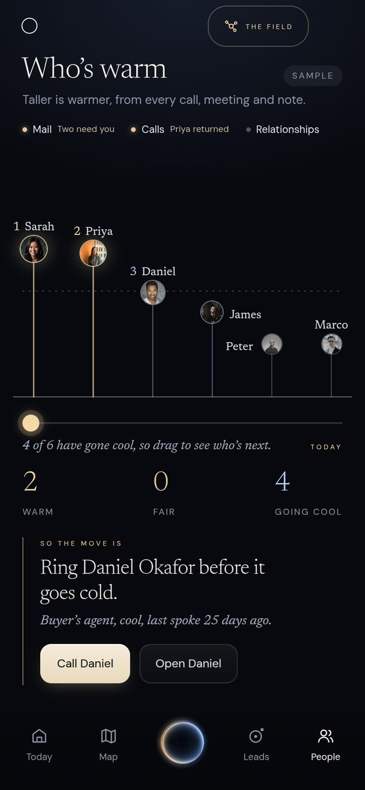
On main 2 to 8 Oct
"Who's warm": taller is warmer. Ring Daniel Okafor before it goes cold.
12 type sizes · 11 text colours · 7 spaced-capital labels
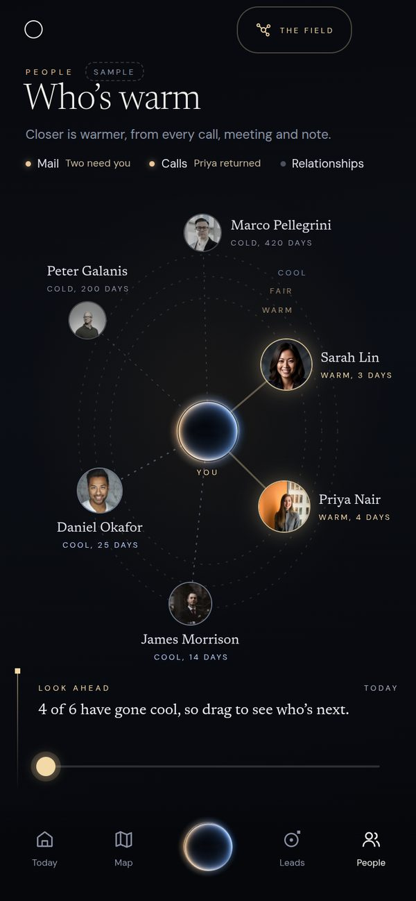
On main 29 to 30 Sep
People on rings around you; closer is warmer.
8 type sizes · 12 text colours · 14 spaced-capital labels
Aerial maps from before 9 Oct would not draw in this machine's software 3D within three minutes, so they are left out rather than shown broken.
What the best do
Apple and Google from their own pages; the others from launch coverage. Each lesson ends with what it means for Luke's app.
Apple, typography
Hierarchy comes from size and weight, not from colour or decoration. Keep to as few typefaces as you can. Body text is 17 pt; nothing goes under 11 pt. Avoid light weights.
Our pages draw text as small as 7 px, and the kit uses a light 300 weight in three places. Two typefaces is right; keep it at two.
Apple, layout
Group related things with one of three tools: space, a container, or a line. Put the most important thing at the top and leading edge.
Leads draws a box round every row, then adds a capital label and a round button inside it. The box alone would do.
Apple, materials
Glass is for controls floating over content, never for the content itself, and used sparingly.
Glass over Today's photo and over the map is right. Plain lists sit on the plain ground.
Apple, motion
Motion has a purpose, is brief, and is optional. It's never the only way something is said.
The orb's light can say "I'm working", as long as a word says it too.
Google, 46 studies with more than 18,000 people
Make the key action stand out by size, colour and position, and group like things. People found the key action up to four times faster. But they also warn that expressive design does not suit everything, naming banking.
Luke's app is a work tool, closer to banking than to a music player. One standout button per screen, and calm everywhere else.
Google Antigravity (agent manager)
The agent's work shows as an inbox of tasks, each with a state (running, done, failed), with its evidence kept beside it.
That is your plain to-do idea for Command: the task, who is doing it, where it's at, and a tap for the journey.
Google Flow and Gemini Omni
One canvas with the work on it and one input at the bottom; you change things by talking to it.
The orb is that input. What it makes should land on the page you're on, not in a separate chat.
First decisions, drawn
Five decisions that would make the six pages one family. Each shows what's on the screen now beside what I propose. Say yes, no, or change it, and I'll apply it to one page first: the simple map, because its structure is already right.
1. Six type sizes, not eleven
Leads' first screen uses 11 sizes, from 7 to 34 px. Apple's phone set has eleven, but a screen uses three or four.
Now, Leads: every size on the first screen
Morrison34 px
Morrison22 px
Morrison18 px
Morrison15 px
Morrison12 px
Morrison11 px
Morrison10.5 px
Morrison10 px
Morrison9 px
Morrison8 px
Morrison7 px
Proposed: six sizes, each with one job
Good morning34 page
Southbank brief26 main thing
Marco Pellegrini19 a name
Next up17 section
Your 3:00 is about this site.15 says
Owns 441–445 · 5 weeks13 detail
Today · Map · Leads11 tabs only
I recommend this ladder. Every size is already on the law's allowed scale, so the check that stops drift needs no new rule, only a shorter list. No light weights and no italics.
2. Four colours for words
Leads' first screen uses 16 different text colours, most of them near-greys that read as the same grey.
Now, Leads: every text colour on the first screen
Proposed: one ink at two strengths, gold, amber
Names and what matters
What it says, detail, times
Yours, and the next step
Late, or at risk
I recommend these four. Three are the 18 October drawing's own; amber is the kit's warning colour. The quieter ink still passes the contrast check on the dark ground (7.4 to 1). Teal subtitles and blue links go.
3. Labels in plain words, not spaced capitals
The law already bans spaced capitals, but the kit's own label style is spaced capitals, so every page that adopts the kit brings them back. Today has 7 on its first screen, the simple map 15.
Now, Leads' top card
NEXT ACTION
James Morrison
230 City Road, Southbank
Proposed: the place says it's next; the words say why
James Morrison
Tell him 230 City Road is for sale. It fits his brief.
Southbank · over 1,500 m²
I recommend fixing the kit's label first. Then labels are sentence case at 13, or gone when the position already says it.
4. One filled button: the next step
Today's card has two pill buttons and a small orb side by side. Google's research is the reason for one: the key action is found up to four times faster when it alone stands out.
Now, Today's card
The Southbank brief
Open briefMark reviewed
Proposed: one filled button, the rest as words
The Southbank brief
Open brief
Mark reviewed
I recommend it, with the button a rounded rectangle at the kit's 12 px corner, so it is no longer a pill.
5. A heading sits with what it names
Apple's rule for grouping is space. A heading belongs to what's under it, so it sits close below and far above. The kit already says 40 above and 12 below. I haven't yet measured how far each page strays from it.
Even spacing: the heading floats
…your 3:00 with Sarah Lin.
24
Then
24
Follow up with Morrison
11:00
Proposed: 40 above, 12 below
…your 3:00 with Sarah Lin.
40
Then
12
Follow up with Morrison
11:00
I recommend holding the kit's 40 and 12 everywhere, and a title with its one-line subtitle 4 apart. I'll measure each page's real gaps from the pixels when it's redrawn.